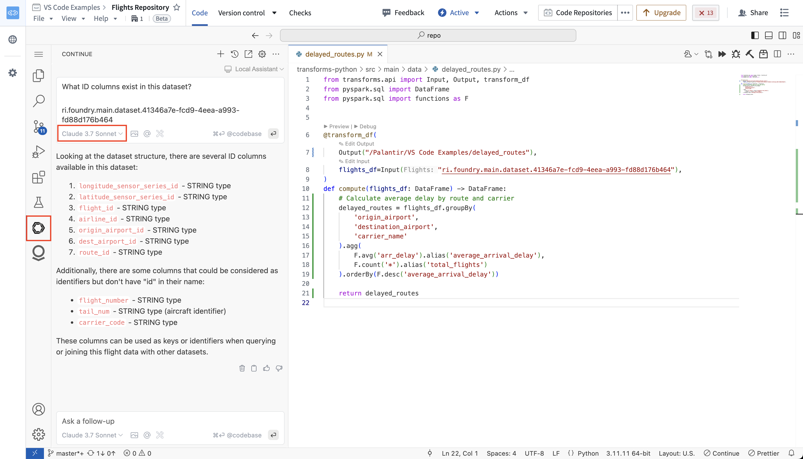
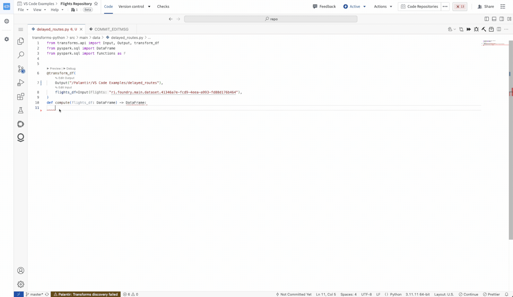
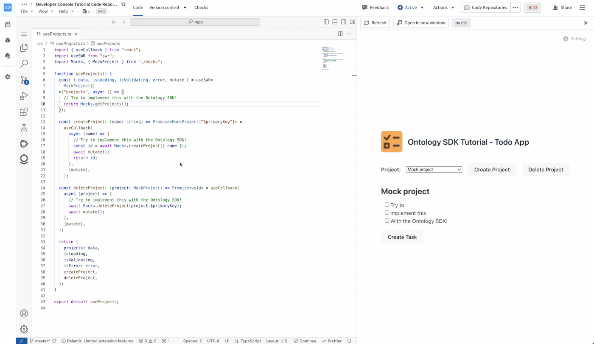
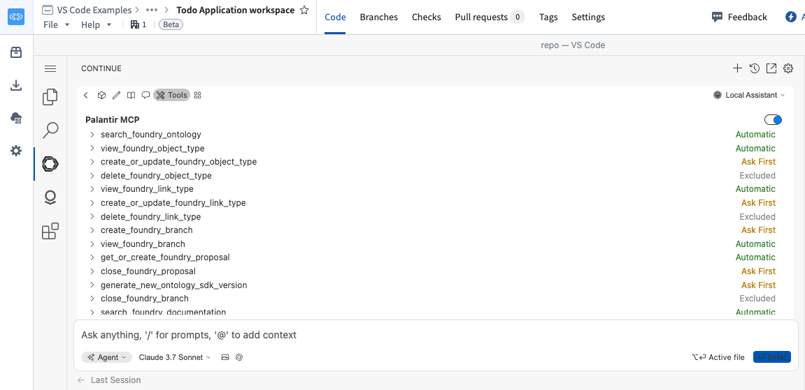

AI development tools can be used in VS Code workspaces to assist with code generation, testing, debugging, and optimization.
Continue â is an open source extension for VS Code. Continue provides features for AI code generation, including chat â, inline edits â, codebase indexing â, custom context selection â, and more.
In the Palantir platform, Continue is preconfigured to work with Palantir-provided language models, and has added knowledge about relevant Palantir SDKs and your Python transforms or OSDK repository. This contextual understanding of your data structures, Ontology, and organization allows Continue to generate more accurate and relevant code.
Below are some commands and actions you can use to get started with Continue:
cmd/ctrl + L to add context to a new chat.cmd/ctrl + I to edit the selected code.@filename, @folder or @codebase to reference parts of your codebase.@problems to include linting errors in open files.
In Python transforms repositories, Continue is preconfigured to understand how to write Python transforms. This includes knowledge of the following topics:
Ask How do I write a transform? to get started.

In TypeScript OSDK repositories, Continue is preconfigured to understand the OSDK included in your repository. This includes the following:
Ask Tell me about my OSDK in your repository to get started.

Palantir MCP is integrated into VS Code workspaces by default. The MCP provides context from your code, library, and Foundry context to the LLM agent. It also offers agent tools to take actions within your repository and Foundry.
The following tools are provided by Palantir MCP in a VS Code workspace:

For more information, review our Palantir MCP documentation.
Continue is included with VS Code workspaces at no additional charge. Usage of Palantir-provided models will incur compute costs according to Palantir's AIP compute pricing model.
Continue in VS Code workspaces is preconfigured to use the Palantir-provided models available on your enrollment. To maintain the same level of security offered across the platform, we do not recommend adding additional models directly in the Continue extension. To add additional models use Control Panel.
Continue is automatically available in VS Code workspaces if AIP is enabled on your enrollment. No additional installation or configuration is required. Contact your Palantir administrator to enable AIP for your enrollment.
Note: AIP feature availability is subject to change and may differ between customers.
VS Code workspaces and the Palantir extension for Visual Studio Code are not affiliated with or endorsed by Microsoft.
The Continue extension is a product of Continue Dev, Inc. No affiliation or endorsement is implied.